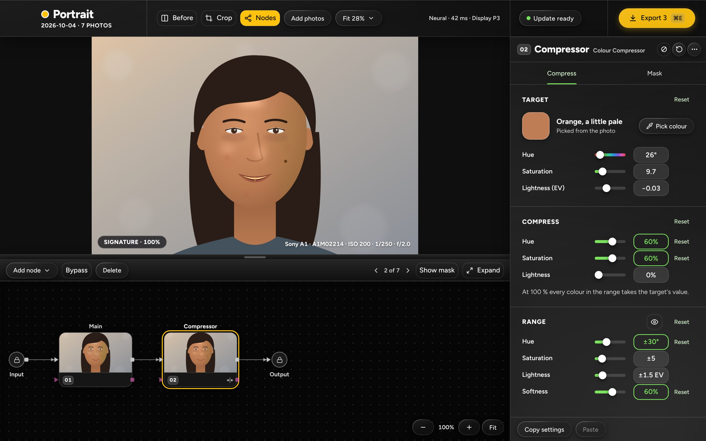
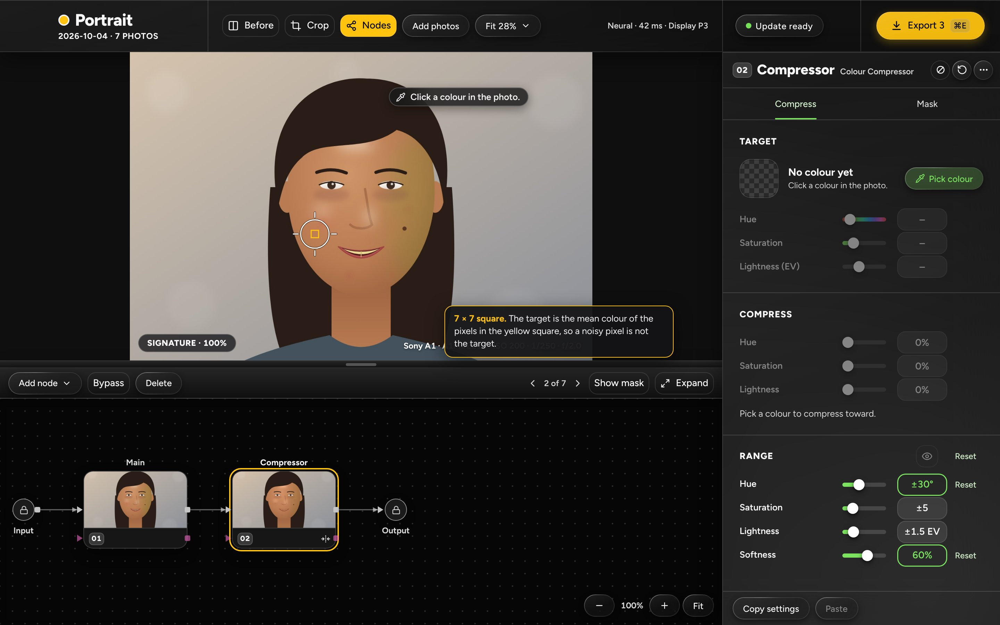
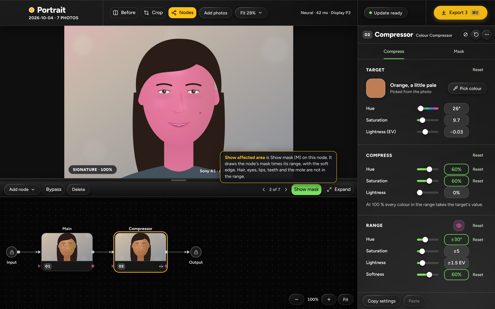
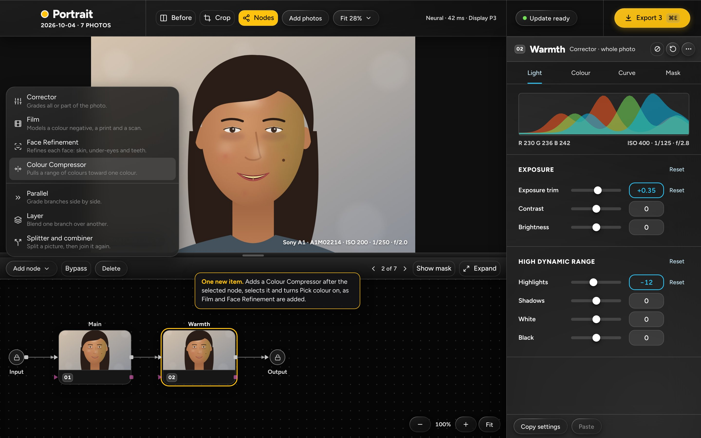
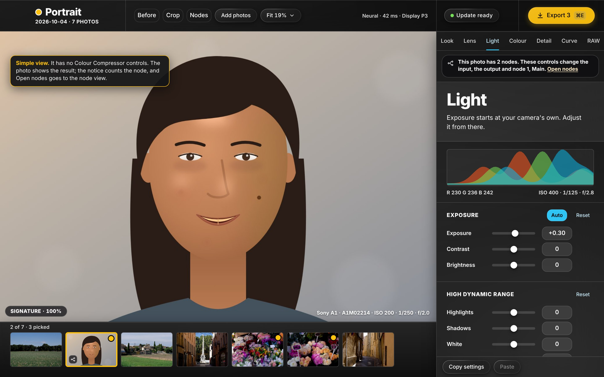
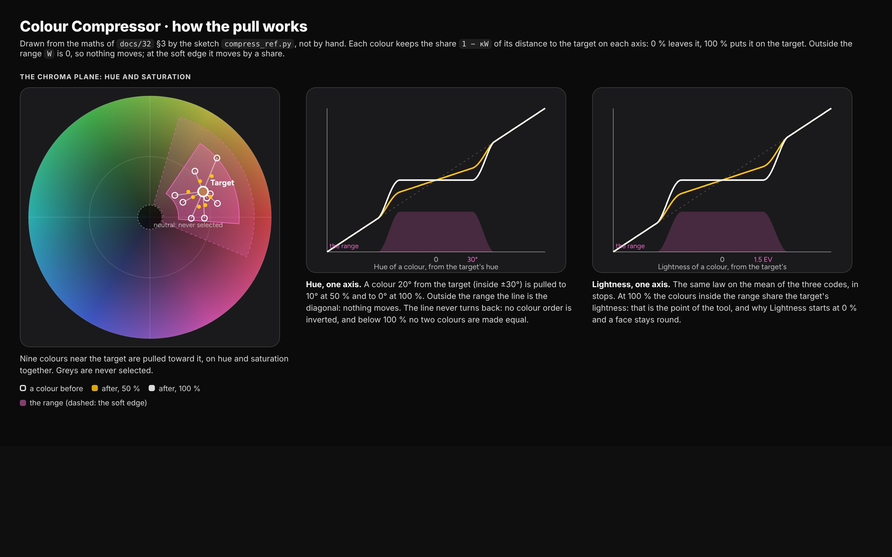
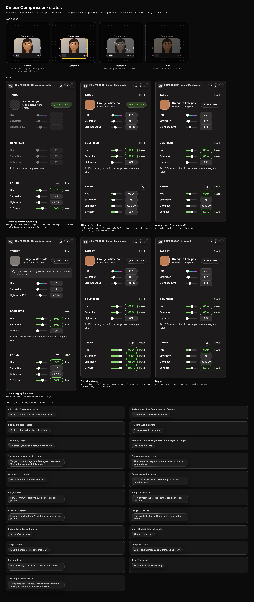

The spec is docs/32 (its §10 has the eleven questions, each with a recommended default). The ones that change the drawings most: the name (1), whether a separate shift of the target is wanted (2), which amounts the first pick sets (3), and a built-in Skin starting point (4). mockup-notes.md lists what the drawings decided.
The node, with its three cards

A face with a green-olive cast on one side. Main, then a Colour Compressor, then the Output. The target is a patch of skin on the lit cheek (Orange, a little pale: hue 26°, saturation 9.7, lightness −0.03 EV). Hue and Saturation are pulled 60 %, Lightness 0 %, so the cast goes and the light and shade stay. The picture is the result of the maths of docs/32 §3, not a retouch.
- Cards: Target (swatch and name, Pick colour, Hue, Saturation and Lightness as typed numbers), Compress (three amounts) and Range (three half-widths and Softness).
- The tab is Compress, in the Colour tab's green; Mask is a corrector's.
- The node is named Compressor on the card (ten letters, so it is not cut); the head's line says Colour Compressor.
Picking the target

The node has just been added: Pick colour is on, the swatch is empty and the number fields and Compress sliders are off, with a line that says why. The crosshair is over the lit cheek; the yellow square is the 7 × 7 pixels that the pick averages.
- Esc ends the pick; it stays on for the next click.
- The first click sets the target and raises Hue and Saturation to 50 %, in one undo step.
- The Range card works before there is a target; its eye is off.
Show affected area

The toolbar's Show mask (M), on this node, draws the node's mask times its range in the mask accent. The skin of the face and neck is in; the hair, eyes, lips, teeth, the shadows under the eyes and the mole are not. The eye in the Range card turns the same view on.
- The weight is shown at 0 % too, so the range can be tuned before anything is pulled.
- The edge is soft, as Softness sets it.
Add node › Colour Compressor

The new item sits after Face Refinement, with its glyph and the line "Pulls a range of colours toward one colour."
- It adds one node after the selected one, selects it and turns Pick colour on.
- Off at 64 nodes, with the usual tooltip.
The simple view

No Colour Compressor controls. The photo shows the result, and the notice counts the node and offers Open nodes (docs/23 §6).
How the pull works (a diagram)

Left: the chroma plane, with the target, the selected range (the dashed edge is the soft edge) and nine colours before (rings), after 50 % (yellow) and after 100 % (white). Middle and right: the law on one axis, hue and lightness. It is drawn from the maths by the sketch, not by hand.
- The line never turns back: no colour order is inverted.
- Outside the range nothing moves; the neutral centre is never selected.
States and copy

Node card states; the panel with no target, after the first click, with a target, with a pick too grey for a hue, with the widest range and bypassed; and the drafts of every tooltip and note.